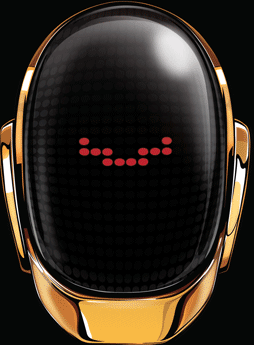

Сайт написан с помощью текстового редактора Atom и фреймворка OptimizedHTML4. Вся информация, используемая на сайте, взята из сторонних источников:
- Wikipedia: ru.wikipedia.org/wiki/Daft_Punk
- Vk Group: vk.com/daft.punk
Фото- и видеоматериалы взяты преимущественно из сервиса Яндекс.Картинки и YouTube соответственно.
Автор идеи и разработчик сайта: Владислав Ковязин